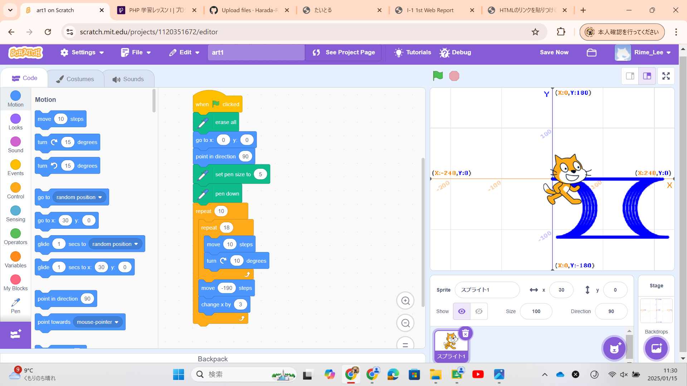
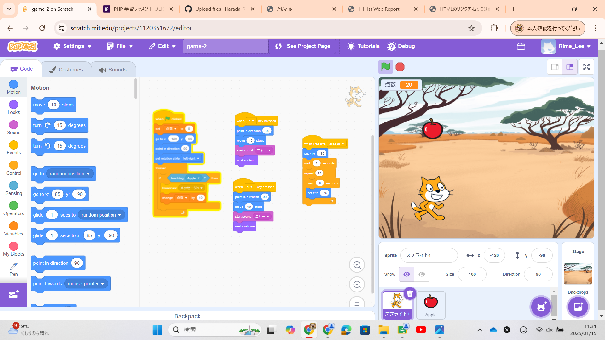

1週目のレポート ： 公大高専１年実習I-1
1b班29番 Rime-Lee
第1週目
1-1 サイエンスアート

1.内容
スクラッチを使用して線を書くプログラムを作成した．このプログラムは繰り返しブロックを使用しており，同じ操作を何回も行うことで規則的な 図形を描くことを可能にしている．
2.感想
機械的・規則的に絵を描くと人間が書いたものとは違った良さがあると感じた．現実の絵のほとんどは人間が書いたもので，力や画材の素材等の 所為で規則的な絵を描くことは難しい．だが，プログラミングによる描画であれば，理想的な空間でデータによる処理なので意図しない限り規則的な 絵が描かれる．そういう絵に中々出会わなくかなり目新しいので良いと思った．機会があれば次はフラクタル図形を描くことに挑戦したい．
1-2 ゲーム

1.内容
スクラッチを使用して落ちてくるりんごをキャッチするゲームを作成した． このプログラムは変数ブロックを用いており，猫がりんごに触れたらある信号を送信し，その信号をりんごがキャッチしたらりんごが消え，得点が加算され，次のりんごが現れるようになっている．
2.感想
変数を駆使することで将来的に，ダメージを受けるとHPが減る，呪文を唱えるとHPが回復といった操作が可能になることに，ある操作が出来るだけで様々なことに派生応用できるプログラミングの良さを感じた．
1-3 ホームページ作成
私のホームページ
1.内容
GirHubを用いて私自身のホームページを作成した．
2.感想
情報1等のプログラミング学習を通してHTMLやCSS，PHPの基礎は学んでいたが，どうやってオリジナルホームページを作るか，どうサーバーを借りるかに悩んでいたので， 今回の実験実習は丁度いい機会だった．これをベースにして今後私のホームページを作っていきたい．
各ページへのリンク
1週目のレポート
2週目のレポート
3週目のレポート
私のホームページ